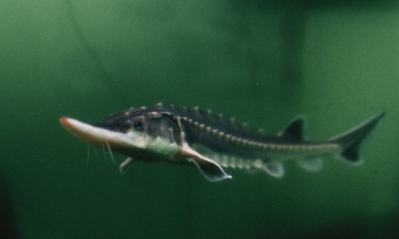
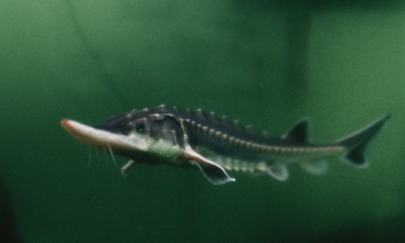

Atlantic Sturgeon
 (Photo on left from the U.S. Fish and Wildlife service, right from Virginia Institute of Marine Science)
(Photo on left from the U.S. Fish and Wildlife service, right from Virginia Institute of Marine Science)Description
The Atlantic Sturgeon can grow to be 370 killagrams and to a length of 4.3 meters. Their back can be bluish-black or olive brown in color while the sides are paler and the under belly is white. They have five rows of thorny plates called scutes. They look a lot like the shortnose sturgeon but the Atlantic Sturgeon tends to be larger while having a smaller mouth and a different snout shape (NOAA, 2016).Habitat and Location
The Atlantic Sturgeon is found in North Carolina in Beaufort, Bertie, Bladen, Brunswick, Camden, Carteret, Chowan, Columbus, Craven, Currituck, Dare, Gates, Halifax, Hertford, Hyde, Martin, New Hanover, Onslow, Pamlico, Pasquotank, Pender, Perquimans, Pitt, Richmond, Tyrrell, and Washington counties (U.S. Fish and Wildlife Service, 2016).
They live the majority of their lives in coastal waters and brackish waters near the shore and swim upstream during spawning season (NOAA, 2016).
Reasons For Endangerment
Overfishing between the 1950's and 1990's have led to to these fish being listed as endangered. They are now threatened as a result of bycatch, having their habitat damaged by human activities, and dams that block their way up river during spawning season (NOOA, 2016).References
"Atlantic Sturgeon (Acipenser Oxyrinchus Oxyrinchus) :: NOAA Fisheries." NOAA Fisheries. NOAA, n.d. Web. 26 Oct. 2016.
Service, U.S. Fish and Wildlife. "Species Profile for Atlantic Sturgeon (Acipenser Oxyrinchus Oxyrinchus)." Species Profile for Atlantic Sturgeon (Acipenser Oxyrinchus Oxyrinchus). U.S. Fish & Wildlife Service, n.d. Web. 26 Oct. 2016.